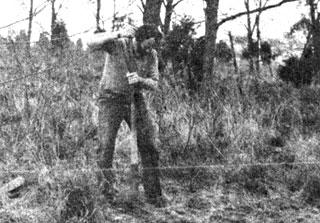
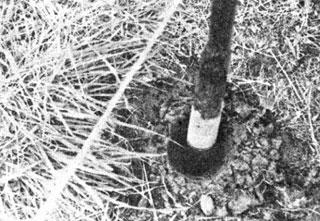
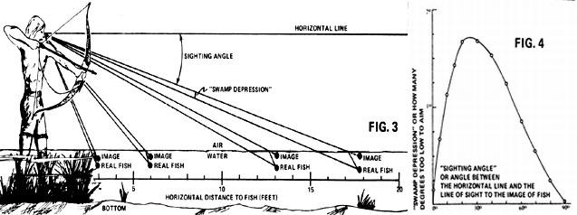
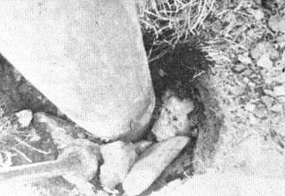
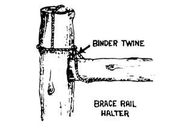
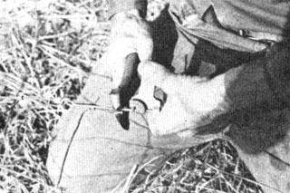
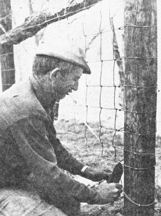
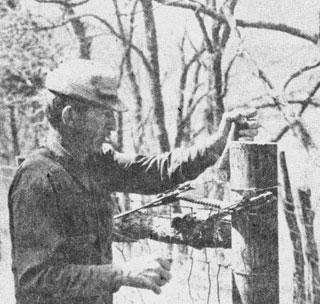

A good fence, farmers say, should be "horse high, bull strong and pig tight." Here's how Jim Fairfield and his neighbor Bill Deavers construct such an enclosure from wooden posts and woven wire on their family homesteads in Virginia.
Special note for all readers of Jim Fairfield's first installment in Mother Earth News, no. 34, and especially for any of you who may have been scared out of a proposed livestock project by the high cost of fencing: Hardly had that issue been mailed out when an alert Louisiana economist and geologist, Claude McMichael, telephoned my editorial office to point out a-er-slight error in Jim's calculations. Mr. McMichael's logic was indisputable, and when the fainting fit had passed off I put in a call to the Fairfield place up in the Virginia hills to check with the author. Jim, radiating blushes along the phone line all the way to North Carolina, allowed as how he'd goofed for sure and told me how it happened.
Jim's done a lot of fencing up at Glencairn, the same way most homesteaders do it: a new line here and a repair job there and never one big chunk starting from scratch. Accordingly, when he prepared "Part I" of this article, he sat down with a pencil and a supply of old envelopes, figured out what materials would be needed to enclose a 10-acre field, and added up the cost. His arithmetic was fine, too, except for a single basic and very common mistake: He based his calculations on the perimeter of one acre and multiplied the results by 10.
Now obviously (obviously when you get to thinking about it, anyway), the perimeter of one 10-acre field is not equivalent to the perimeters of 10 one-acre fields, which means that Jim's figures in Mother Earth News, no. 34 are way, way off . You wouldn't, for example, need 694 line posts for such a fence, but only 220. And you'd buy 8-not 26-rolls of woven wire, and only 2 of barbed wire. And the total cost of fencing 10 acres, with materials selling for the prices Jim quoted, would be a comparatively modest $1,193.50, which sure sounds a lot better than the $3,600 plus figure our red-faced author arrived at; and my editorial staff, who tend to get somewhat glassy-eyed around deadline time, dutifully checked all the arithmetic but never noticed the fundamental error in method.
Oh, well. Jim fully expects Bill Deavers to razz him about the mix-up for the next ten years or so, and I fully expect an overwhelming volume of mail from all you sharp-eyed folks out there who spotted what my staff missed. At least we can all console ourselves with the reflection that the cost of fencing-while high enough, certainly-isn't anywhere near as high as we let on in no. 34.
NOTE: This is the second half of a two-part article. The first half, which described how to price out fencing supplies and save money on their purchase and/or fabrication, appeared in Mother Earth News, no. 34.
Plan your fence. Plan it backward, forward, sideways, up and down. Plan it in your head and on the back of an envelope. Scratch the design on the ground. Walk over the tentative route, and think about it.
I'm talking especially about interior enclosures. Although it's comparatively simple to run a line of fence around the perimeter of your property, it's quite another matter to divide a homestead efficiently into segments that make your work easier. Remember, a fence keeps cattle in, but it also keeps you from going where you used to go before you shut yourself out. Take, for example, the traffic problem I caused by placing a gate on the wrong side of a joining fence line. Now we have to let ourselves into one pasture and through a second entrance to get where we go most often in that part of our farm, Glencairn. To make the arrangement efficient will cost me another gate, someday when I can afford one.
While you're at the planning stage, you may want to consider seeking advice from your local professional. Most farmers are fence builders (they have to be, since good enclosures are nearly as necessary as water and feed), but in almost any country area there's someone who makes a specialty of fencing, and the work of such an expert is far superior to the average do-it-yourself job.
Ask around for your neighborhood's counterpart of Bill Deavers (my own local expert) and get that person to help plan your fence line and advise you on the special problems presented by your land. Later on, pay him to stretch your wire (at least the first section, so you can see how it's done). Believe me, his aid will be worth every nickel it costs you.
When you're sure of the best location for your fence, it's time to lay out the line in detail, by driving stakes at the comers of the area to be enclosed and stretching string tightly between them. (We used recycled baling twine for this purpose.) Keep the line as straight as possible to minimize any unwanted effects from the tension that will be generated by the stretched wire. Absolutely necessary curves should be negotiated by "stepping around" them with one or more extra corners and bracing the posts to withstand the additional strain.
Now you're ready to choose your posthole sites. Mark the location of a corner upright first, and stake out a spot 8 to 10 feet along the line for a brace post, which you'll need to add extra strength to the corner. The first line post should go in 12 feet farther on, followed by the others at 12-foot intervals on centers. (You'll find a 12-foot pole a handier measure than a tape when you're laying out holes.)
Some adjustments in posthole spacing, usually no more than a foot or two either way, can be made at this stage to save you headaches later. Avoid outcrops of rock, for instance, and if the line goes over a knoll, be sure to locate a post close to the top of the rise or you'll have trouble with the bottom strands of your fence hitting the ground when you tighten the wire. If the crest is sharp, plan to break the fence at that point, and mark for a heavy upright at the top of the hillock and a brace post on either side. Later, you'll stretch wire to the spot and shorten the bottom strands before going on. The same general method applies to the crossing of a gully or sharp declivity.
Next comes the fun part: digging holes. I can think of a number of things I'd rather do than dig postholes, and very few I like doing less. If it's any consolation to you, you do at least have some choice of method.
Around here, folks who carve out postholes by hand generally do so with digging clams (otherwise known as posthole diggers) which resemble two long-handled narrow-blade spades hinged together at the neck. Their operation is simple: Remove a shovelful of sod from the spot beside your twine marker where a post is to go. Then punch the blades down into the mud with a driving motion, spread the handles to clamp what you've dug, pull them up, and dump the dirt beside the hole.
Bill Deavers uses a file to keep his digging clams sharp enough to really dig with. A file can restore a cutting edge lost against a day's worth of rock, which is what we excavate as much as earth in our part of the world.
A chisel-nosed digging iron, used to loosen clay and rocks between clamfuls, is another essential piece of equipment. It's easier to chunk up the bottom of a hole with the iron than to rip your blisters open trying to do it with the wider blades of the clams.
Corner posts (which take the main strain of stretched wire and are the longest and heftiest) require the deepest holes, around 3-1/2 feet. If you start with a timber 8 feet (96 inches) long and bury the bottom 42 inches, an optimum 54 inches will be left above ground. That gives you an inch of clearance at the bottom, plus 47 inches for woven wire fencing, plus 4 inches for a strand of barbed wire, plus a couple of inches leeway. Wrap a strip of electrician's tape around the handle of your shovel or digging clams 3-1/2 feet from the tip. Then, when you're tempted to quit because the hole looks deep enough, you'll know better. And do start by digging in a corner post. After that ordeal, the mere 2-1/2 feet needed to set line posts should seem comparatively easy.
Bill keeps his holes quite narrow, only 10 to 12 inches across. "Some people dig a wider hole, then fill it in," he says. "Not me. I don't like working anymore I have to."
In our area, rocky ground is something we have to live with, and it's a special problem when we're digging postholes. Sometimes we can break up obstructions with a digging iron or move the post a foot and miss the stone. Other times, though, a rock ledge is too big to bust or avoid. It's possible to get rid of the blockage by drilling and blasting, but few people go to that expense. If you face the same problem and you can bore down a foot or more, the best solution is to dig a wider hole than usual, set some rocks in around the post, and fill in the cavity with cement. Then the timber should be braced to the next in line, or to those on either side. Such an upright will heave in frost but will settle back again.
I have to admit that the stones we curse so often around here do come in handy when we set posts in dug holes, because, as Bill says, "you want to fill the hole a good part of the way with rock. If you don't, the post won't settle right after the frost comes out of the ground."
Deavers can point to snaggly fences he swears would still be straight and true if the builder had "rocked" his uprights. "I ain't saying the fellow's lazy, but it takes a durn sight more work to rock all them posts than just fill in the mud and let 'em go. I'd just as soon not dig the holes in the first place as not rock 'em." A lot of local farmers seem to agree: I've seen a fence-maker haul stones a dozen miles just to make sure his posts were solid.
Packing rocks beside a post after it's been placed in its hole also helps to true up the timber, and that's important. When a section of fence supports are going into the ground, two alignments need to be checked: [1] Uprights should be vertical, particularly in the plane where the wire will rest. [2] Each post should just touch the line of string which marks the course of the fence. Adjustments are made as the posts are set and tamped and, at any time during the process, the upright's position can be modified by driving a rock in tight on the side opposite the direction in which you want to shift the post.
Here's how to plant an upright in a dug hole: Stand the post in place and line it up by eye. Then shove rocks, fist-sized or bigger, around the base, and fill in with smaller stones. Pack about a third or one-half the cavity in this way, and tamp in a layer of earth with the flat disc on the handle of the digging iron. (Here's where Bill's smaller holes come in handy. He likes to make them not much bigger than the post, so that he has to drive in the first rocks with the tamper. Then he widens the top of the excavation by shoving dirt from the sides down onto the stones.) Add more rocks and more earth, packing each layer solidly as you go, and finish up with a mound of compacted soil higher than the surrounding ground level, to keep moisture from collecting around the wood.
Digging clams are probably the best simple tool for gouging postholes out of hard clay or stony soil. If you're working in loam, though, you can drill the holes with a hand auger or get someone to drill them for you. Some farmers have hydraulic posthole augers as P.T.O. (power take-off) attachments for their tractors, and a little scouting will most likely turn up a neighbor who'll do the job for a fee. The cost varies according to what the traffic will bear. One local fellow charges 25c a hole, the lowest price I know of around here. Another gets twice that much, and even at a quarter apiece, the 200-plus holes needed to enclose 10 acres can run to a lot of cash.
Rather than pay someone just to make your postholes, you might look for a farmer with a hydraulic post-driver. Such a machine rams a 3- to 4-inch timber into the ground as fast as an auger can drill the hole, and the driven posts stay put better in soft soil.
Posts can also be hand-driven into conical holes punched or "spudded" in soft earth with a heavy iron. This method is Bill's favorite. "I like to spud posts in, 'stead of diggin' 'em," he says. "They go in tight and stay that way. Frost don't heave 'em as easy as dug posts. But the ground's got to be right."
"Right" is damp to juicy. Earth that's too dry will jar your brains out with every blow, but in springtime, when the frost is coming out of the soil, you can punch a 2-foot cone every few minutes. I've jabbed a hole in ground so wet it spit water in my face.
Bill Deavers made his own 5-foot-long spudding iron by cutting off an 18-inch length of an old 3-inch-diameter transmission shaft and welding the piece to a prybar. Then he heated the heavy nose in a forge and pounded a bullet tip on it.
With a tool like that, spudding in a post doesn't take long, but it does take sweat. Pick a spot on the line of your future fence, one post radius from the stretched twine (so that the planted upright will just touch the string tangentially). Drop the iron straight down to mark the center of the spot and use a shovel to lift a 4- to 5-inch circle of sod and topsoil from around the point. Then begin to punch in the spudding iron, rolling the top of the tool in a widening circle with each drop. This action squeezes the earth out of the way in a cone shape which deepens by repeated jabs. Get the hole down 2 feet, if possible, before you pound in the post.
Bill showed me how to sharpen the ends of fenceposts that are to be driven. I set a concrete block on the tailgate of our pickup and slide the bottom end of a timber through the hole, which holds the length of wood while I remove bevel shaped slices from the tip with a lightweight Stihl chain saw. Four of these cuts and the upright is pointed like a pencil.
Deavers stands on a stepladder and drives in posts with a 16-pound hammer. I prefer the more steady footing of my pickup's tailgate, even though I have to admit that there are places a truck just won't go.
You may be tempted at times to smack a post with the broad flat side of your sledgehammer, especially when you're swinging down from shoulder height or higher. Don't! You'll be hitting across the grain of the handle instead of with it, and a solid swat will snap the wood at the head.
Caution: A 16-pound hammer can break a leg if you accidentally miss a post with a healthy swing. I learned from a few close calls to keep my line of swing such that-if I did goof-I wouldn't take off a kneecap in the follow-through.
If the ground is tough, your hammer may begin to splinter a post after you've driven it a couple of feet. That's no real problem. It just means you'll have to trim the top later.
When all your posts have been planted, you'll have to brace the ones at every corner and gate (and those at line breaks for knolls and gullies). The idea is to transfer the tension of the stretched wire to the ground through the bases of the main and brace posts, by means of a horizontal rail set between the two vertical timbers. Some fencemakers prefer to set the extra rail diagonally from the top of the corner (or whatever) post to the bottom of the brace post. This, however, doesn't prevent the supports from moving toward each other (somewhat like a pair of scissors closing). It's preferable to install the reinforcement parallel to the ground at a height of about 44 inches, to keep the two posts a fixed distance apart.
Scraps of pipe are sometimes used as brace rails. If you go this route, drill a socket for the horizontal brace in each vertical post and be sure to insert the length of pipe before you tamp the supports solidly into the ground.
Braces can also be made from rough-sawed 2x4s. Most commonly, though, they're poles about three inches in diameter, the leftover lengths of not-so-straight posts cut from the woodlot. (Any really crooked timbers need to be more than 3 inches across to withstand the compressive load they must bear.) Saw each wooden rail about an inch and a half longer than the distance between the two posts (so that it can rest in a 3/4-inch notch on both sides) and make sure the ends are square.
If you're working alone, here's a gimmick to hold up one end of a brace while you install the other: Make a halter of binder twine which can be slipped over the top of a post. The string will keep the horizontal bar roughly in position while you toenail it to the uprights.
Bill Deavers prefers to fasten his wooden brace rails in place with steel dowels, for better joints that won't fail if the uprights loosen a bit. He cuts the 3-inch-long pins from half-inch reinforcing rods and inserts them in 1-1/2-inch holes drilled in the ends of the rails and in the posts.
The final step is to tie the whole strengthening system firmly together with wire. In our area, brace wire comes in 9, 10, 11, 12 and 14 gauge at a single price for all sizes (you get more feet per pound of the lighter weight wire and, yes, 14 gauge is smaller in diameter than 9 gauge). Some farmers use 9 gauge single, but you need more muscle than I've got if you intend to work with wire of that diameter. Two strands of lighter gauge are preferable. In our parts the usual choice is No. 11, heavy enough to do the job, light enough to work with.
Brace wire is installed as follows: Loop two strands around the two uprights, from the bottom of the corner or gate post to a point on the brace post several inches above the horizontal rail. The loops should just fit comfortably around the wood. Pull the strands even with each other, twist the ends together, and loosely staple the wire to the timbers to hold it in place while you tighten it. Then insert a stick about 12 to 15 inches long and 1-1/2 inches in diameter at the brace wire's midpoint and twist the reinforcement tourniquet fashion. This shortens the length, tightens the posts against the brace rail, and exerts a force against the earth opposite to the tension of the soon-to-be stretched fencing.
Don't be in a hurry to stretch your fence, particularly if you put in the posts during wet weather. The corners, especially, need time to settle and dry in tight. "If you rush the job, you'll pull your corner and brace posts right out of the ground," says Bill. In case the climate doesn't cooperate and you must put up your wire while the ground is wet, add an extra brace as insurance.
If you have a choice of starting points, begin at the highest corner so that the heavy, awkward rolls of steel fencing can at least be unwound downhill. Handling will be simpler if you proceed as follows: Stand the roll by the fourth post down the line, with the smaller spaces to the bottom, and unhook the ends of the strand. Without moving the roll, unwind several turns of fencing, enough to reach back to the comer post and about 18 inches beyond. Why? Because, before you go any farther, you'll be wrapping the mesh around that comer upright, and if you set the bundle of wire close to the point of attachment you won't be able to tip it over once the end is made fast. It's a lot easier to unwind a few turns of fence than to wrestle a full roll 20 or 30 feet until it can be laid flat without binding.
Wrap the ends of the fence wire around the comer post with the bottom strand an inch from the ground and clip one or two rows of vertical stays so you can thread the horizontal ends around the support and back through the mesh. Then twist the end of each strand around itself. Make sure you get the same tension on each wire. Finally, staple the bottom and top bars in two places to keep the netting from shifting up or down on the post.
An essential tool for the above operation is a wire twister, an ingeniously shaped piece of flat steel not unlike a juice can punch. The device has a short finger which loops over a strand and catches the end in a notch, so that you can easily wrap it in a tight coil around another wire. Another "must" is an implement we call a "fence beast," which looks like a combination claw hammer (with one pointed claw) and heavy duty electrician's pliers. It's an all-purpose tool: wire cutter, staple puller and driver, wire twister, nutcracker and much more.
OK, the ends of the netting are attached to the corner post. Tip the mass of wire over and roll it out as far as the next corner or gate post. If the distance is long, you may need to splice on another roll. That's easily done: Overlap the old and the new mesh at the last vertical stay on the old roll and the first one on the new. Then clip the end of each strand free, and wrap it around its counterpart on the other side of the doubled stays. When tension is applied, the wrapped wires will pull up tight against one another with the vertical stays in between. At the next corner post, set up your stretchers. There are many kinds and they operate on one basic principle: The end of a section of woven fencing is clamped across every strand, top to bottom, and the whole run of wire is then puffed tight by a tensioning device. I've seen outfits that retailed for as much as $89.95, but before you buy one at any price, ask around the neighborhood. Many farmers have fence stretchers and you can usually arrange to borrow a rig for the few days you'll need it. Someday the owner will need a favor from you. That's what neighbors are for, to help each other, right?
It's also possible to construct your own stretcher. A simple clamping arrangement can be made from two 5-foot 2x4s, with holes for 3/8-inch carriage bolts drilled at bottom and top and at points that will fall between each pair of horizontal strands when the clamp is attached to the mesh. Grip the wire between the boards, avoiding vertical stays, and tighten the nuts. The wood should be protected with washers.
How about the "puller" or tension device? Commercially manufactured units incorporate equal lengths of chain that wrap around the top and bottom of the 2x4 clamps and lead to one hook of a block and tackle or winch. Some outfits are even provided with two ratchet and lever arrangements, but you don't really need anything so fancy. You can rig your own substitute from whatever is handy (a one-ton block and tackle will be sufficient in most cases). The winch or tackle can be anchored to a tree, to your tractor or to the corner post itself.
Bill Deavers likes to leave the stretchers on a fence for a day or two, "to make sure my posts are holding and give the wire a chance to lose its wrinkles," he says. "Don't pull the kinks out in hot weather, when the metal's already expanded in the heat. You stretch it too tight, and as soon as it gets cold that wire'll contract and pull corner and brace posts up like straws out of a milk shake."
Once a run of wire is stretched, clip and wrap the strands as you did on the first corner post. If you're applying tension with the corner itself as an anchor, however, first staple each strand (behind a stay) to the brace post. This will hold the fencing taut long enough to let you remove the stretcher altogether while you fasten the mesh around the support, or at least while you retension the fence with the last few feet of wire gripped in the tightener.
After all the hard work that comes first, stapling seems like the gravy bite, until about the 500th U-shaped fastener has been hammered in, anyhow.
Staples are necessary only to hold stretched wire against its supporting posts in case your cow wants to lean on the netting. They are not necessary to maintain tension. Some fence builders fasten every stay on every post, others only every other stay, alternating positions of the fastenings from one upright to the next.
There's really nothing much to stapling apart from two commonsense rules: [1] Don't drive the metal loops in tightly enough to crimp the wire. This may crack the galvanizing and let rust begin its certain destruction. [2] Staple at some distance from a vertical stay, so that as the wire contracts and expands it can move slightly through the fastenings without warping the mesh or twisting the post.
Some post wood gradually dries away from the staples and splits, so that the fasteners loosen and fall out here and there. A possible answer is a new, one-legged Hold-tite staple with false threads. Bang one of these into a loose-holding timber and it'll stay put. The only trouble with these gadgets is their outrageous price. I use them just where necessary, or to replace shaky fastenings.
That's it! Add a top strand of barbed wire, hang a gate (or just stack a few poles across the gateway) and you're in business. Enjoy the good feeling, and don't worry about the reaction of your livestock to the new enclosure. Animals get used to fences. After a while they seem to know just where the barriers are, even when they're running in the dark. I like to lean on a fence. It's an art that takes talent, time and temperament. Talent I got, temperament I'm working on . . . but time? Ah, there's the rub.
The colt pushes a soft lip
Through the fence
To suckle a salt thirst
On sweated denim.
Emmy Award looks up,
Supper hay trailing from
Ceaseless grinders.
A nicker betrays
Mother-fear and thrusts
A shoulder to her son
And I am scratching air.
|
 In soft ground, postholes may be spudded rather than dug. Here the author positions a hole next to a twine guideline. |
 A spudding iron, which can be made by welding a heavy metal nose to a wrecking bar, punches a conical hole in wet soil. |
 The tamping end of a digging iron is used to push soil down from the edges of a narrow hole and pack it around a post. |
|
 Keep the upright solid in the ground even after a hearing frost. |
 A halter made of binder twine holds one end of a brace rail steady while the other end is toenailed or doweled in place. |
 Bill Deavers makes a splice by holding the strands parallel and winding one firmly around the other with a wire twister. |
|
 Each horizontal strand of netting is wrapped around the corner post, then around itself. Note the post-and-wire brace. |
 A top strand of barb is added to the fence to prevent livestock from leaning against the woven wire and breaking it down. |
|